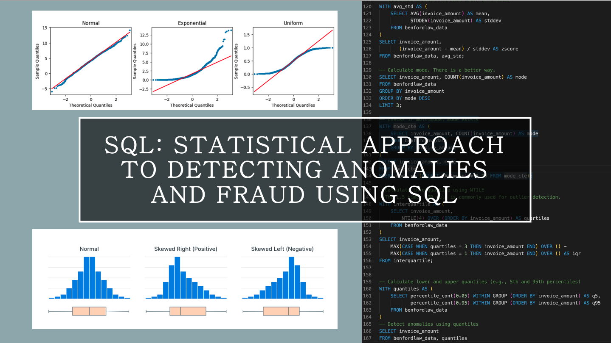
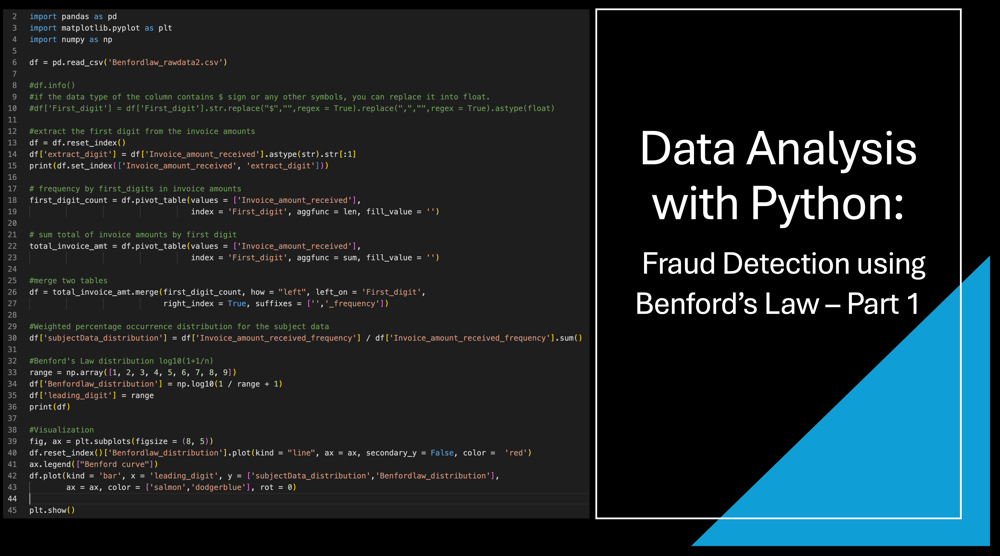
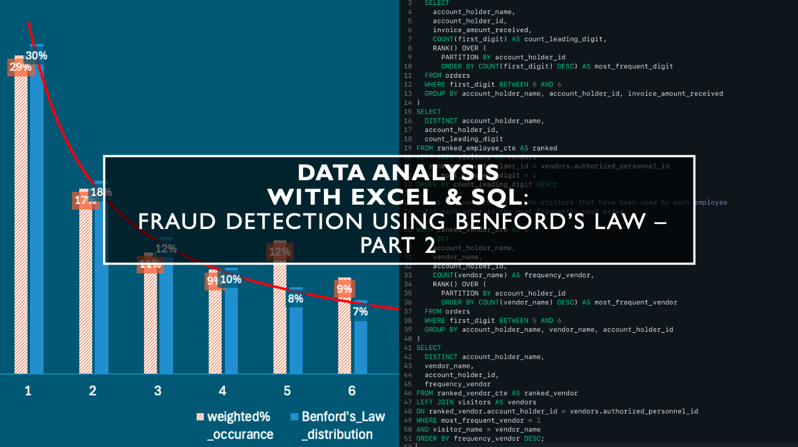
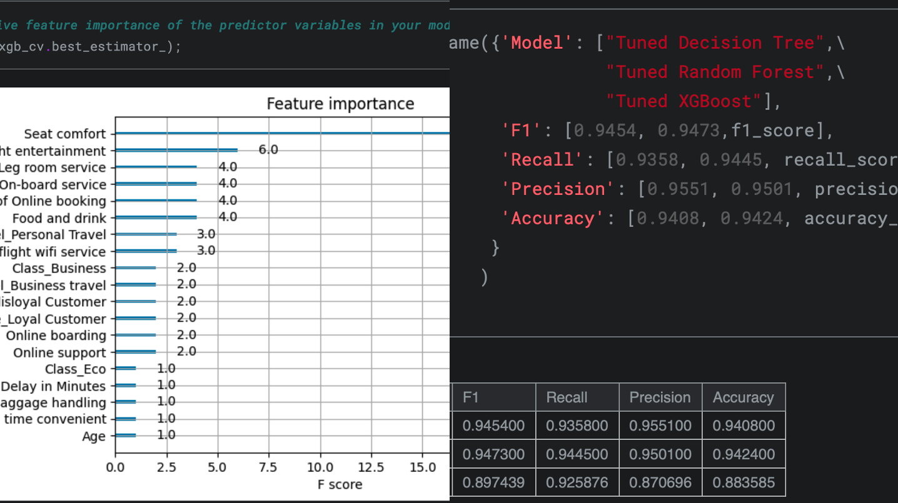
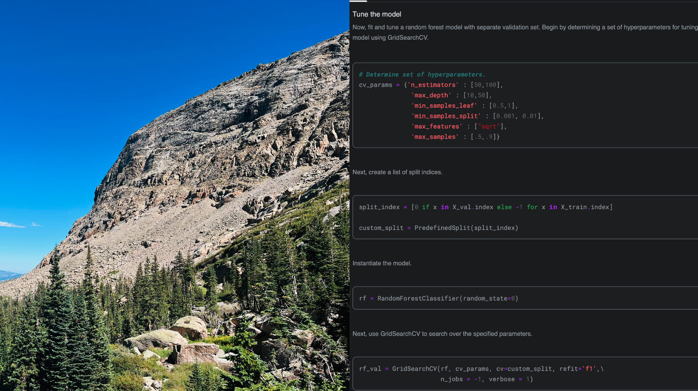
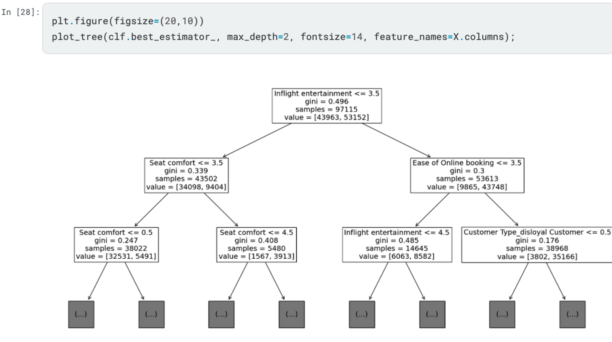
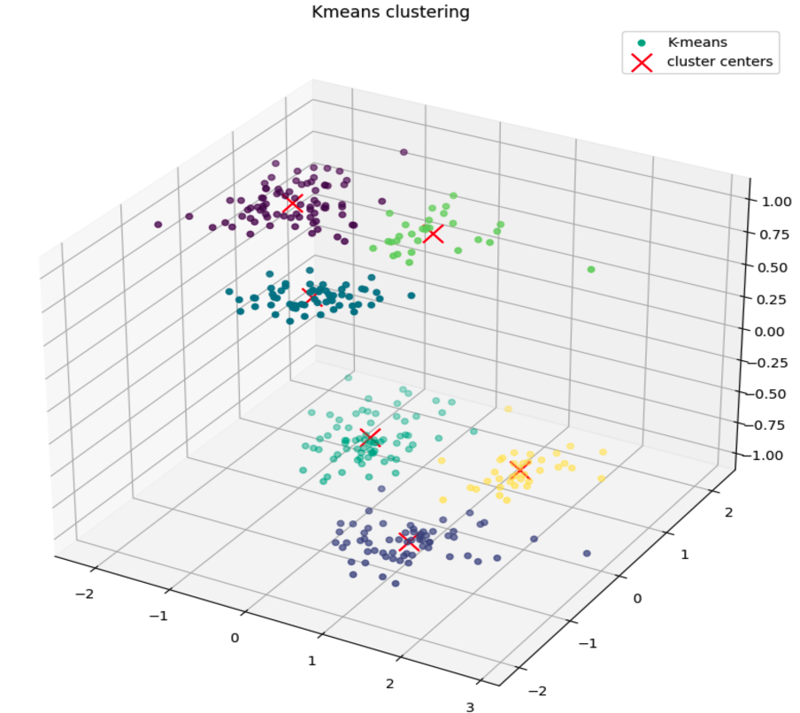

Python: Invoice Fraud Detection Tool
Created a Python tool to extract, cross-validate, and correct numerical data in invoices and expense reports,
reducing processing time to under two seconds per document, 25 times faster💡 than manual validation (tested on 100+ different documents).
Key functions:
↳ Extracts numbers from images (PDF, PNG, JPG).
↳ Automatically runs calculations and checks if the numbers, including taxes, are correct in the documents.
↳ If incorrect invoice amounts are found, it shows the correct amounts and labels the document as “Potential Fraud Detected.”
If no errors are found, it labels it as “No Fraud Detected.”.
Future Upgrades:
↳ Implement natural language processing (NLP) algorithms to analyze sentiments and identify fraud in various unstructured texts within documents.
↳ Develop a webcam feature for detecting fraud in physical documents and for real-time image tampering detection.
↳ Build and deploy a Streamlit app for broader usage.
Python: Automated Regression Statistics and ANOVA Interpretation Tool
Developed a Python tool to automate the interpretation of multiple regression and ANOVA outputs.
This tool parses Excel-generated output and produces clear, plain English summaries of statistical findings
directly in Excel using Python, reducing misinterpretation errors by 90%.
Key functions:
↳ Translates regression coefficients, p-values, and ANOVA tables into plain-language summaries.
↳ Automates hypothesis testing and post-hoc analysis (Bonferroni, Tukey’s HSD).
↳ Checks residuals for autocorrelation to validate model assumptions.
↳ Handles multi-variable datasets where manual interpretation is error-prone and time-intensive.
Unlike standard statistical tools (e.g., SPSS, Stata, R, Python libraries) that generate only raw output, this tool produces directly
interpretable results within Excel. It enables faster, more accurate analysis for professionals in finance, healthcare, marketing,
and manufacturing fields where errors in statistical interpretation can lead to costly decisions.
Result: Reduced 90% of time and error in statistical interpretation for analysts working with regression statistics and ANOVA models.
Excel VBA: Automated Financial Statement Analysis Tool
Developed an automated tool using VBA to automate the analysis of financial statements, including cash flow statements,
income statements, and balance sheets. The tool performs data wrangling on structured inputs and produces automated financial KPIs
and risk assessments.
Key functions:
↳ Automates parsing and analysis of raw financial data from multiple statement types.
↳ Converts unstructured or semi-structured cash flow data into standardized, readable summaries.
↳ Reduce manual variance analysis time from 5-7 hours to under a minute.
Designed to replace time-consuming, error-prone manual analysis with a consistent, repeatable process accessible
directly in Excel used in finance and accounting workflows.
Result: Cut analysis time from hours to minutes while improving consistency in evaluating a
company’s financial health.
October 10, 2024
This project aims to explore some of the practical and effective methods for detecting anomalies using SQL.
In my previous role as a business analyst, I utilized several of these statistical techniques to conduct preliminary anomaly tests, laying the foundation for initiating multiple fraud investigations.


This project aims to explore and analyze a practical application of the Benford’s Law using Python coding to detect potential fraudulent transactions.

This project aims to analyze a practical application of the Benford’s Law using Excel and execute insightful SQL queries to investigate procurement fraud.

In this project, I developed a predictive model using Python to forecast employee turnover using a Random Forest algorithm. The process began with exploratory data analysis (EDA), where I cleaned the dataset, handled missing data, and identified outliers. I also visualized relationships between key features such as job title, department, hours worked, satisfaction, and performance reviews, using heatmaps and correlation plots to identify significant patterns.
For model development, I trained a Random Forest model to predict employee departure. Key features like average monthly hours, job satisfaction, and tenure were found to be highly influential. The model achieved 98.56% accuracy and 98.7% precision, with the confusion matrix highlighting strong performance, particularly in identifying true negatives.
The results indicate a robust model for predicting turnover based on employee characteristics, with actionable insights on potential causes like burnout and job dissatisfaction.

In this project, I built an XGBoost classification model using Python to predict passenger satisfaction based on features such as inflight entertainment and seat comfort. After conducting extensive exploratory data analysis (EDA) and data preprocessing, including handling categorical variables and splitting the data into training (75%) and test (25%) sets, I developed and evaluated multiple models, including Decision Tree and Random Forest.
Using GridSearchCV, I fine-tuned hyperparameters such as max_depth, learning_rate, n_estimators, and subsample to optimize model performance. The evaluation metrics included Accuracy, Precision, Recall, and F1-Score, with XGBoost achieving an accuracy of 87% and high precision (88.1%) and recall (88.4%). A confusion matrix was used to visualize model performance, confirming strong predictions for both satisfied and dissatisfied passengers.
This project highlighted the importance of hyperparameter tuning for improving model efficiency while ensuring a balance between precision and recall, essential for real-world applications in customer satisfaction modeling.

In this project, I built and tuned a Random Forest model to predict customer satisfaction (satisfied vs. unsatisfied) based on survey data from 129,880 flight customers. Key tasks included:
Data Preprocessing: Handled missing values, performed one-hot encoding for categorical variables, and split the dataset into training, validation, and test sets.
Model Building & Tuning: Constructed an initial model and fine-tuned hyperparameters using GridSearchCV for optimal performance.
Evaluation: Assessed model performance with F1, Precision, Recall, and Accuracy, achieving an F1 score of 0.95. Compared the results with a tuned Decision Tree model, which showed superior performance in three out of four metrics.
Ensemble Learning: Leveraged the Random Forest's ensemble technique to reduce overfitting and improve predictive accuracy, outperforming the decision tree model.

In this project, I built and tuned a decision tree model to predict airline customer satisfaction based on survey data from 129,880 customers. I performed exploratory data analysis (EDA), including checking for missing values, encoding the data, and converting categorical variables into numerical values suitable for modeling.
The model was trained using a 75% training dataset, and I applied hyperparameter tuning using GridSearchCV to optimize key parameters such as max_depth and min_samples_leaf, reducing overfitting.
I evaluated the model using performance metrics including accuracy, precision, recall, and F1 score, achieving results (>90% in all metrics). I also visualized the decision tree and analyzed feature importance, identifying 'Inflight entertainment', 'Seat comfort', and 'Ease of online booking' as key predictors of customer satisfaction.

In this project, I applied K-means clustering to a dataset of 344 penguins, aiming to uncover hidden patterns in the data. After conducting thorough data exploration, I performed data cleaning (checking for missing values), data manipulation (encoding categorical variables, scaling features), and prepared the dataset for clustering. I used StandardScaler to normalize the data, ensuring K-means worked effectively by measuring distances between data points.
To determine the optimal number of clusters (k), I applied the elbow method by evaluating inertia values and confirmed the results with the silhouette score. Visualizing the data in 3D, I found that six clusters yielded the best separation between species and sex.